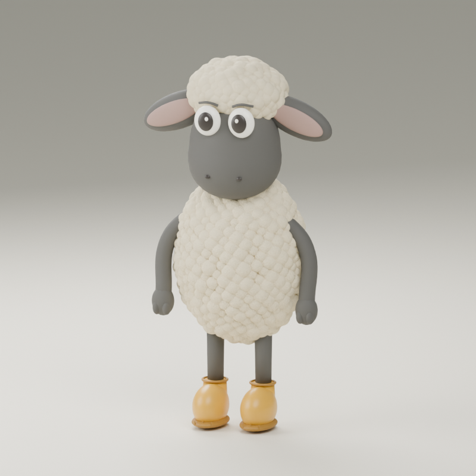
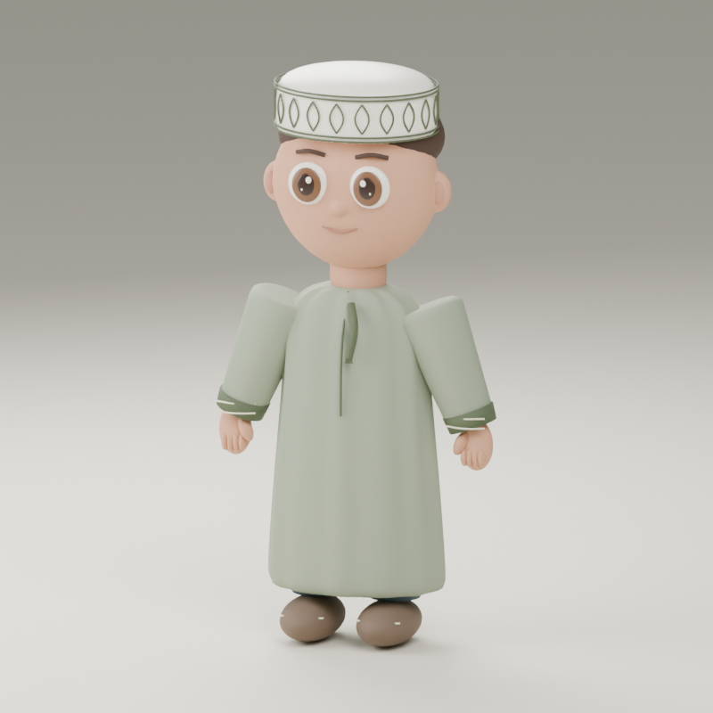
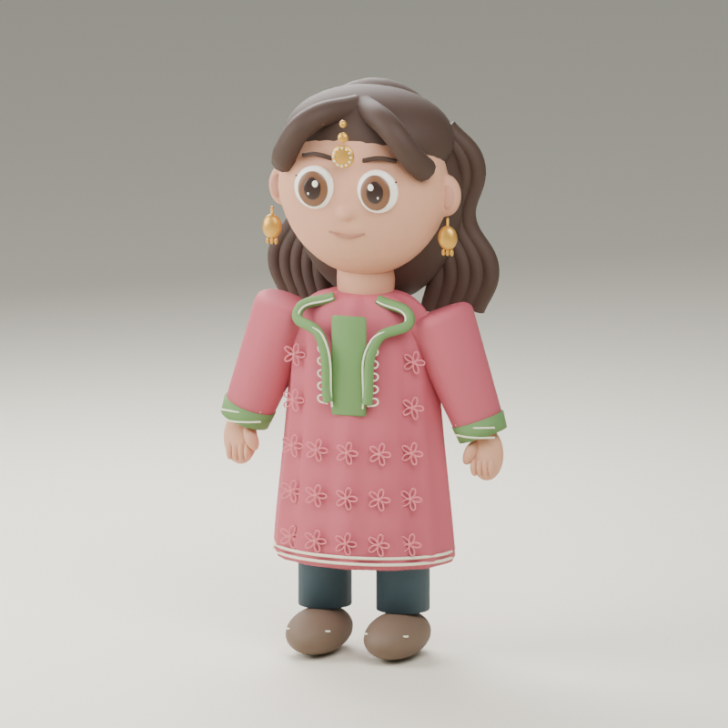

Wanees
Kokoro · bm_george
WANEES · ونيس
Generated English auditions from open-source Kokoro stock voices. These are initial casting choices, not recordings of Omani children. Use the controls to compare their warmth, clarity and fit.

Kokoro · bm_george

Kokoro · am_fenrir

Kokoro · af_heart
Arabic speech uses the separately hosted Chatterbox worker and needs native pronunciation review. Sources and implementation notes · Meet the 3D cast